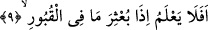

İnsan malın peşinden koşma ve onu elde etme husûsunda gâyet kuvvetlidir, gayretlidir.
Bu uğurda âdetâ kendini parçalar, ancak Allah’a kulluğa olan muhabbeti ve O’nun
nîmetlerine olan şükrü zayıftır, ihmalkârdır.
“Şedîd” kelimesi, cimri, eli sıkı, tutucu mânâsına gelir. Yâni o, mal sevgisi ve infâkın
kendine zor gelmesi sebebiyle cimridir, eli sıkıdır. İnsanın, “kenûd” yâni “nankör” sıfatı
ile vasıflandırılmasının ardından bu kötü sıfatla da vasfedilmesi herhalde, münafıkları
münafıklığa iten sebeplerden birisinin de “mal sevgisi” olduğuna işâret içindir. Çünkü
onlar îmân etmiş gibi görünerek mallarını korumuş oluyor ve ganîmetlerden pay
alıyorlardı.
Şeyhü’l-İslâm (k.s.) buyurmuştur ki: “Eğer malı seviyorsan başkalarına ver ki onu
sana yeniden ihsân etsinler. Mîrâsçı için mal bırakma, zîrâ kalbine pişmanlık ateşi
koyarlar.”
Malı dostlarına verirsen ne iyi!
Eğer verirsen onu toprağına koymuş olursun.
Ey Hakîm, altın senin menfaatin, harcaman içindir.
Eğer gizlersen çanaktan ve gümüşten farkı yoktur.
9. Kabirlerde bulunanlar diriltilip dışarı atıldığı
“O bilmiyor mu ki” Yâni bilmiyor da ondan mı o işlediği çirkin fiilleri işliyor? Veya
insanoğlu dünyada iken, Allah’ın kendisine yaptıklarının karşılığını vereceğini
düşünmez, bilmez mi?
“Kabirdeki ölüler çıkartıldığı”
“Bilmiyor mu?” fiilini “dünyada iken bilmiyor mu?” şeklinde tefsir ettik. Çünkü
insandan yeniden diriliş esnasında bilmesi istenmez, bu ancak o dünyada iken istenir.
Bu âyette “Kabirdeki ölüler”ler anlamında (mâ fi’l-kubûr) denirken akılsız varlıklar
için kullanılan “mâ” edatı getirilmiştir. Çünkü ölülerin orada akıllılar mertebesiyle bir
bağlantısı yoktur.
10. Ve kalplerde gizlenenler ortaya konduğu zaman insan (hâlinin ne olacağını)
düşünmez mi?
“Göğüslerde” açıktan açığa işlenen ameller bir yana, münâfıkların içlerinde
gizledikleri inkâr ve günahlar dâhil olmak üzere “ne varsa” herşeyin sahifelerde